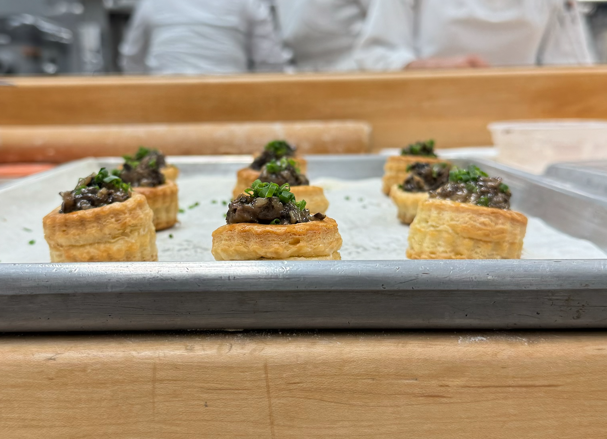

About Chef John
"I started Quinn Cooks out of my deep passion for food and cooking, a passion that was sparked at a young age by my Grandma. I have fond memories of helping her bake holiday cakes, and that experience laid the foundation for my love of the kitchen. As I grew older, I continued to explore baking and eventually launched Quinn’s Cakes Plus. However, over time, I realized that my interests and business goals had evolved beyond just baking. My desire to explore broader culinary experiences led me to pivot, and that's how Quinn Cooks was born—a reflection of my passion for all things food, beyond just cakes." - Chef John